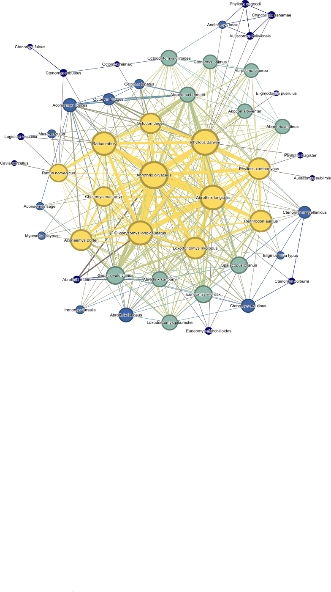

To determine how geographic, genetic, and ecological interactions between rodents in a network can be used to explore the risk of disease spillover.
We are focusing on a rodent-ectoparasite network in the neotropics (Chile), where hantavirus in endemic. There are 50 rodent species documented to be parasitized by a total of 131 different ectoparasites which include fleas, ticks, mites and lice. We updated a review of Chilean rodents and ectoparasites (Landaeta-Aqueveque et al. 2021) to include associations documented until March 2023.
We use host-ectoparasite associations to build an ecological network of rodent hosts where they are connected by ectoparasites they share. Based on this, we explore the probability for rodents to share ectoparasites based on range overlap, range distance, and phylogenetic relatedness. We then assess how well the network model predicts Hantavirus hosts and use it to assess potential novel hosts.
Maps
Phylogeny
Ectoparasite sharing
Network building
Network Analysis
In addition to the code documented on this site, we used Gephi software (Bastian M., n.d.) to build our rodent-ectoparasite network and to calculate scores of closeness centrality for each rodent. We also used Geneious Prime 2023.0.4 (https://www.geneious.com), to build a neighbor-joining phylogeny based on MUSCLE alignment to caluclate pairwise phylogenetic distance between rodent species. We used cytpchrome b sequences downloaded from GenBank (Sayers et al. 2022).
This network shows rodents as nodes (cirles) and shared ectoparasites as edges (connecting lines). The edges are weighted by how many ectoparasites the rodents share and the nodes are weighted by the closeness centrality of the rodent in the network. The colors correspond to the closeness centrality quantile group that the rodent belongs to with yellow being the most central and dark blue being the least. We used Gephi software to construct this model. 
Cited: